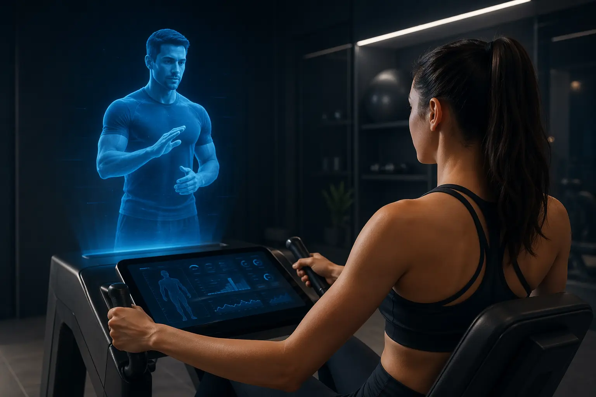

Виртуальный наставник прямо в кабине: CoachCube делает индивидуальную тренировку похожей на занятие с личным
тренером.

В Лондоне персональная тренировка с квалифицированным тренером обходится примерно в 60 фунтов (около 6200 рублей) за час. CoachCube предлагает похожий формат занятий, но без живого инструктора: стоимость вдвое ниже — около 30 фунтов (примерно 3100 рублей), а сам процесс проходит в компактной закрытой кабине размером примерно с примерочную.
Моторный тренажёр здесь выступает не просто как устройство для создания нагрузки, а как полноценный измерительный инструмент. Если во время подхода одна рука начинает работать слабее другой, система мгновенно улавливает это по изменению крутящего момента и автоматически подстраивает сопротивление. Такой уровень точности и скорости реакции практически недоступен даже опытному тренеру.
Контролируемая среда решает ключевую проблему большинства ИИ-фитнес систем — влияние посторонних факторов. Когда в кадр попадают люди или меняется освещение, алгоритм часто теряет точность отслеживания тела . Внутри кабины эти проблемы исключены: неизменный фон, стабильный свет и отсутствие внешних объектов позволяют существенно повысить надёжность трекинга.
Следующий этап развития технологии — подключение носимых устройств. В этой концепции пользователь входит в кабину, смартфон автоматически синхронизируется, и система получает данные о его состоянии: например, сколько он спал или была ли у него интенсивная физическая нагрузка накануне. Благодаря этому тренировка адаптируется под реальное состояние организма, а не под заранее заданную программу.
Продукт не ставит целью заменить групповые тренировки или привычные занятия спортом с друзьями. Социальный фитнес остаётся отдельной сферой. Его задача — обеспечить тех, кто хочет получить качественную силовую нагрузку без давления переполненных залов и без необходимости нанимать персонального тренера.
Основатель проекта Уилл Дин рассматривает кабины как решение для самых разных пространств — от отелей и аэропортов до домов престарелых. Идея в том, чтобы дать людям возможность тренироваться эффективно там, где мало времени или ограничено место, но есть потребность в осознанной физической активности. При этом персональные тренеры не исключаются из процесса: один из вариантов использования — тренер разрабатывает программу, а клиент самостоятельно выполняет её в кабине в удобные промежутки времени, например между делами или встречами.